KI: erste Schritte & rechtliche Aspekte
05 December, 2024
Künstliche Intelligenz
Künstliche Intelligenz (KI): Entwicklung von Maschinen, die Aufgaben ausführen können, welche normalerweise menschliche Intelligenz erfordern.
KI-Systeme können trainiert werden, um aus Daten zu lernen und Muster zu erkennen.
Mögliche Einsatzbereiche:
- Personalisierte Empfehlungen
- Selbstfahrende Autos
- Vorhersage von Proteinfaltungen
- Erstellung von Musik/Bildern/Texten
Large Language Models (LMMs)
Maschinelles Lernen:
Modelle, die ohne explizite Programmierung Muster aus Daten erlernen, um Vorhersagen oder Entscheidungen zu treffen. 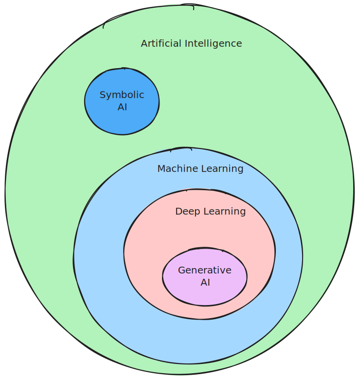
Large Language Model:
Ein maschinelles Lernmodell, das darauf trainiert wird, das nächste Wort nach einem Eingabetext (Prompt) vorherzusagen.
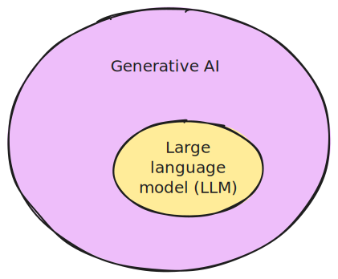
KI verrichtet geistige Arbeit
Kognitive Arbeit und KI: KI hat das Potential zu verändern, wie geistige Arbeit verrichtet wird.
Wichtige Erkenntnisse aus der Forschung:
- Dell’Acqua et al. (2023) erforschen die Möglichkeiten, mit KI-Unterstützung kognitive Aufgaben zu verbessern. Fazit: KI kann Produktivität und Qualität steigern, aber auch neue Herausforderungen ergeben.
- Toner-Rodgers (n.d.) diskutiert die Implikationen von KI für die Forschung und betont die Balance zwischen menschlicher und maschineller Intelligenz.
- Cui et al. (2024) analysieren die Auswirkungen von generativer KI auf Software Engineering und hebt sowohl Chancen als auch Herausforderungen hervor.
Erkenntnisse:
- Automatisierung von routinemässigen kognitiven Aufgaben ist möglich
- Unterstützung kreativer Arbeit ist möglich
- Deskilling: Gefahr, bei ständiger KI-Unterstützung eigene Fähigkeiten zu verlieren
- Ohne Training: KI-Tools werden oft für ungeeignete Aufgaben eingesetzt
Körperliche Arbeit
19. Jahrhundert
20. Jahrhundert
Bildquelle: Erstellt mit DALL-E 3
Wie sieht das für die kognitive Arbeit aus?
1960
2030
Bildquelle: Erstellt mit DALL-E 3
Ankunftstechnologien
Hochschulen stehen vor Herausforderungen mit Technologien wie ChatGPT, weil sie:
- Traditionelle Technologie-Evaluierungsprozesse umgehen
- Durch spontane Adoption eingeführt werden
- Reaktive statt proaktive Richtlinien erfordern
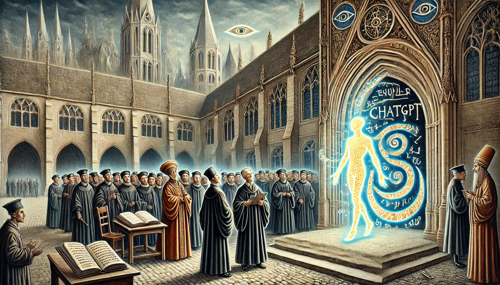
Bildquelle: Erstellt mit DALL-E 3 (“ChatGPT arriving at a university in the style of a 14th century painting.”)
Adoptions- vs. Ankunfts-Technologien
Traditionelle Einführung
- Sorgfältige Bewertung
- Pilotversuche
- Mitarbeiterschulung
- Klare Zeitpläne
- Etablierte Richtlinien
Beispiele: Adoptions-Technologien
Learning Management Systems, Smart boards
Ankunftstechnologien
- Spontane Nutzung
- Umgehung von Prozessen
- Keine Vorbereitung
- Benutzergeführte Einführung
- Reaktive Richtlinien
Beispiele: Ankunfts-Technologien
Smartphone, Wikipedia, YouTube, TikTok
Was sind LLMs?
Um die angekommene Technologie einordnen zu können, ist eine Entmystifizierung notwendig:
- LLMs sind statistische Modelle, die Text analysieren, um das nächste Wort vorherzusagen.
- Diese Vorhersage geschieht Wort für Wort.
- Jede Vorhersage basiert auf
- der Eingabe (Prompt)
- den zuvor generierten Wörtern
- der internen Struktur des Modells
\[ \newcommand{\purple}[1]{\color{purple}{#1}} \newcommand{\red}[1]{\color{red}{#1}} \newcommand{\blue}[1]{\color{blue}{#1}} \]
\[\purple{P(\text{Wort}_{i+1}} \mid \blue{\text{Kontext}}, \red{\text{Modell}})\]
Das \(\purple{\text{nächste Wort}}\) wird vorhergesagt, in Abhängigkeit von \(\blue{\text{Inputsequenz}}\) und \(\red{\text{Modell}}\).
Vorhersage
Nicht alle Teile des Kontexts sind gleich wichtig:
“Die Familie, die sehr wohlhabend war, lebte in einem grossen Haus. Das Haus stand inmitten eines weitläufigen Gartens. Es war bekannt für seine prächtige Fassade und die grosszügigen ___”
Nach Thomas Mann, Buddenbrooks
Welche Wörter sind besonders wichtig, um
- die Bedeutung des Satzes zu erfassen?
- das nächste Wort vorherzusagen?
Kontext verstehen
“Die Familie, die sehr wohlhabend war, lebte in einem grossen Haus. Das Haus stand inmitten eines weitläufigen Gartens. Es war bekannt für seine prächtige Fassade und die grosszügigen ___”
Syntaktische Struktur (Grammatik und Struktur des Satzes):
- Das Wort “grosszügigen” ist ein Adjektiv, das wahrscheinlich ein Nomen - im Plural beschreibt (Dativ oder Akkusativ wegen der Endung “-en”).
- Der Satz bezieht sich auf das Haus und den Garten, daher liegt der Fokus vermutlich auf deren Eigenschaften.
Semantischer Kontext (Bedeutung):
Die Beschreibung hebt Wohlstand hervor. Das nächste Wort beschreibt vermutlich etwas Luxuriöses oder Weitläufiges.
Lexikalische Kohärenz (Wörter und deren Bedeutungen im Kontext):
Nach “grosszügigen” folgen häufig Nomen, die Räume, Flächen oder architektonische Elemente beschreiben, z. B. “Räume”, “Gärten”, “Fenster”.
Was sind LLMs?
Ein LLM kann man sich wie einen ausgefeilten Autocomplete-Mechanismus vorstellen.
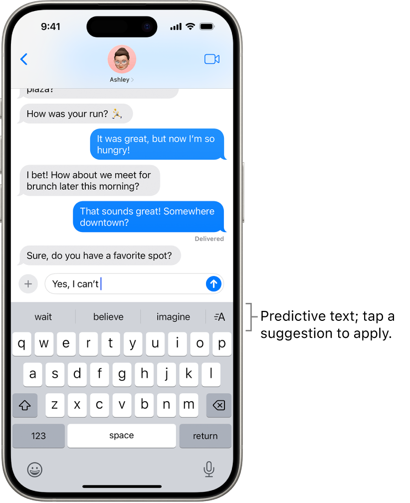
Bildquelle: www.apple.com
Wie generieren LLMs Text?
Wie können LLMs Text vorhersagen?
Sie werden trainiert, das nächste Wort in einer gegebenen Wortsequenz zu erraten.
Ein LLM wird in drei Schritten aufgebaut:
- Sammeln eines grossen Text-Korpus.
- Basierend auf diesem Text, muss das Modell das nächste Wort in einer gegebenen Wortsequenz vorherzusagen lernen.
- Das Sprachmodell wird feiner abgestimmt, um das gewünschte Verhalten zu erreichen.
Wie werden LLMs trainiert?
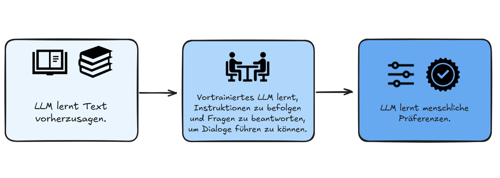Gefahren und Herausforderungen
Die verschiedenen Stufen des Trainings sind mit verschiedenen Arten von Bedenken verbunden:
- Urheberrecht: Die trainierten Modelle werden mit Texten trainiert, die möglicherweise Urheberrechtlich geschützt sind.
- Bias: Die trainierten Modelle können bestehende Vorurteile aus den Trainingsdaten lernen.
- Energieverbrauch: Das Training der Modelle verbraucht viel Energie und ist damit umweltbelastend.
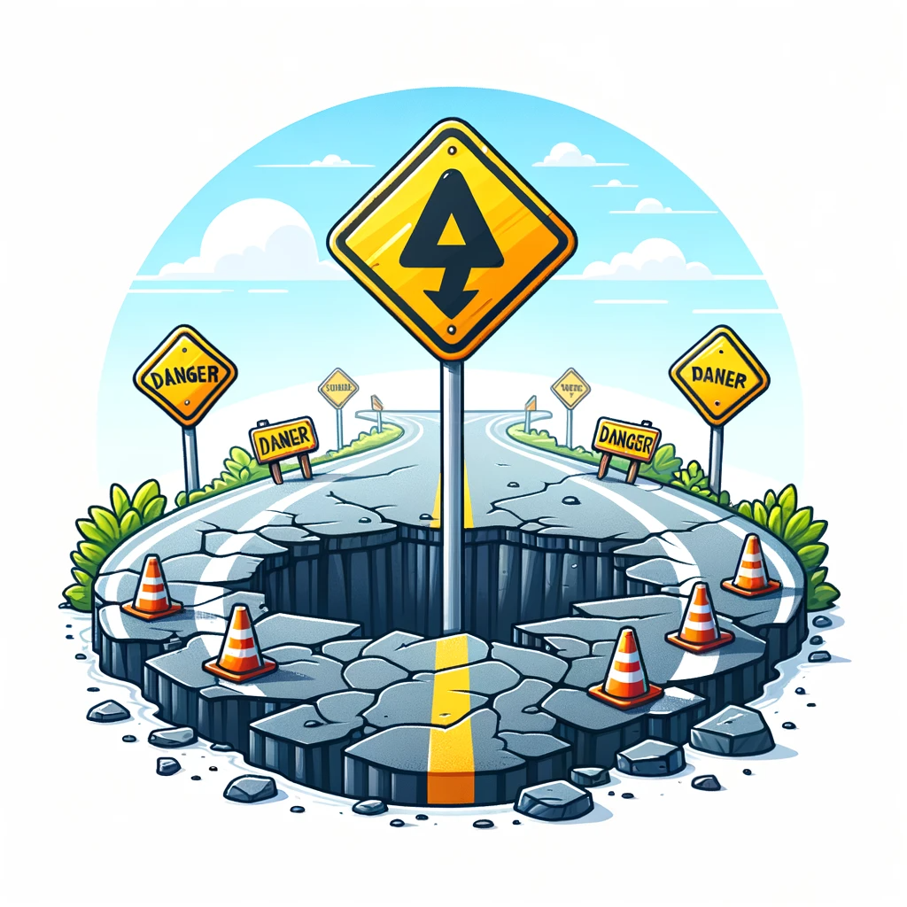
Gefahren und Herausforderungen
- Obschon sich LLMs viel Wissen aneignen1, werden sie nicht trainiert, faktisch korrekte Aussagen zu machen.
- Dies bedeutet, dass wir alle Aussagen, die LLMs uns präsentieren, immer kritisch hinterfragen müssen.
- LLMs sind keine Wissensdatenbanken. Informationen immer anhand externer Quellen überprüfen.

ChatGPT
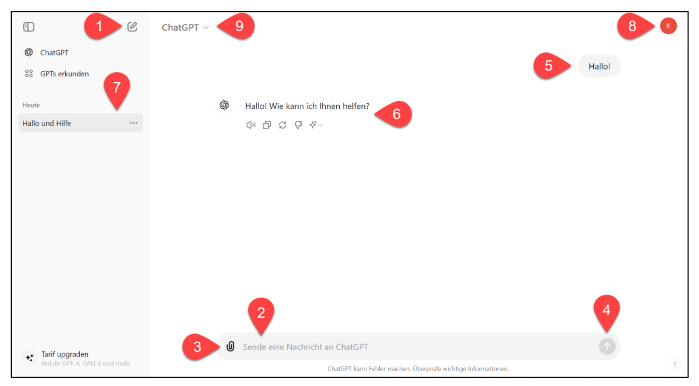Fragen beantworten
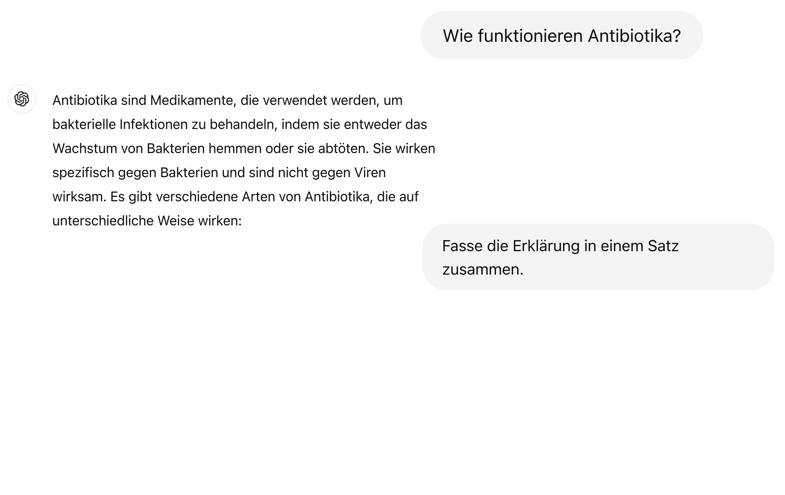Bilder analysieren
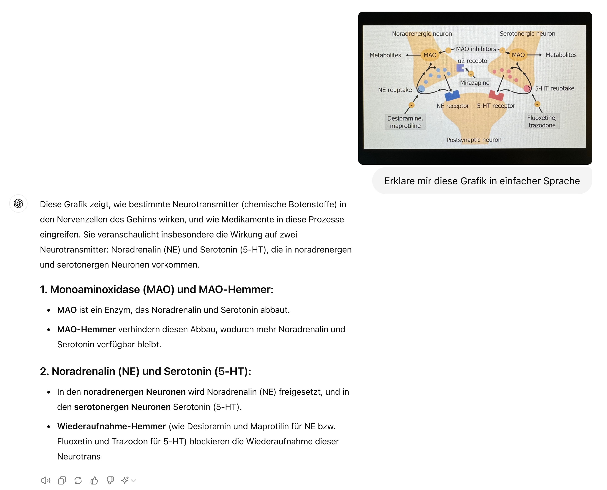Dokumente zusammenfassen
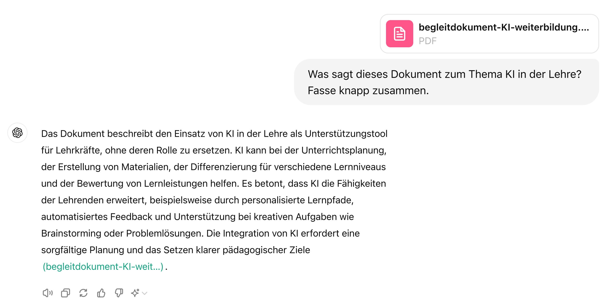Output strukturieren
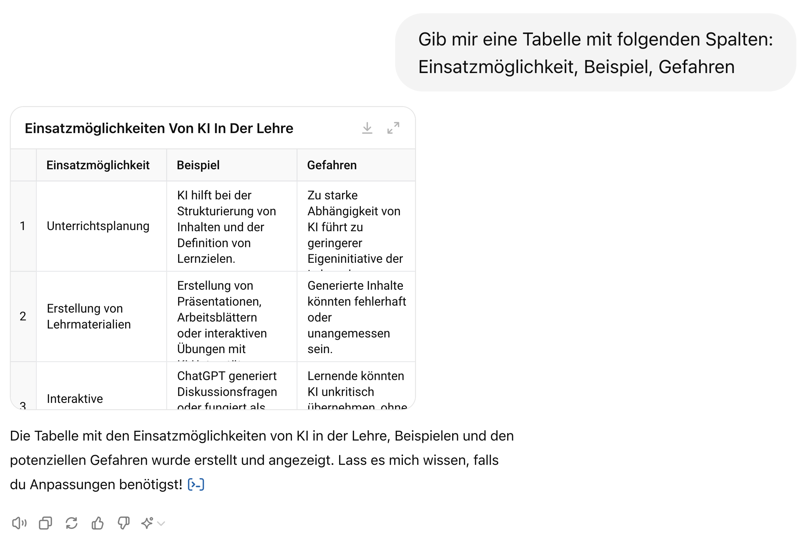Websuche
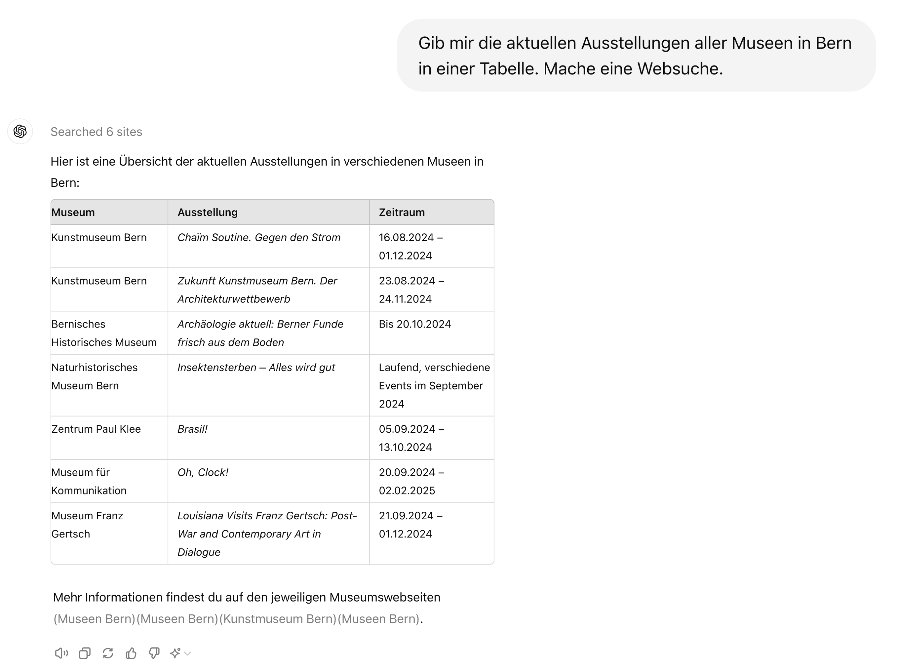Datenanalyse
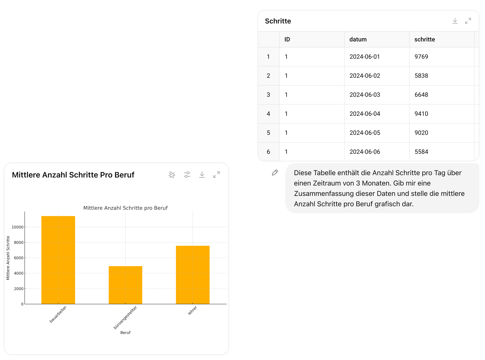Custom GPTs
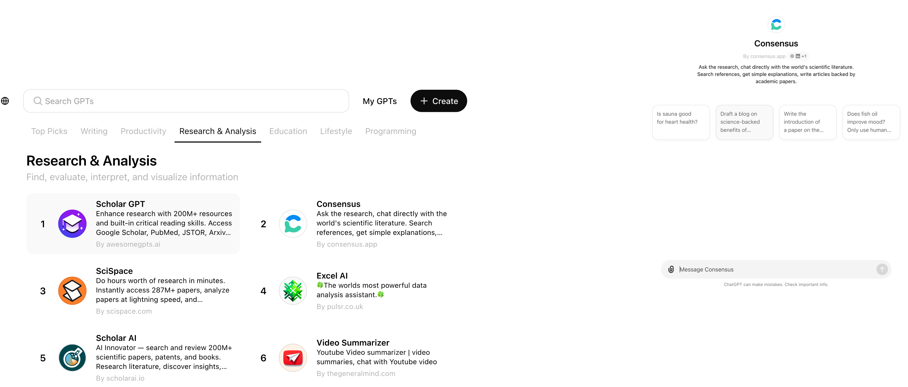Rechtliche Aspekte
Zwei wichtige Aspekte, welche bei der Benutzung von LLMs beachtet werden müssen:
Rechtliche Aspekte
- Wer besitzt die Rechte an den von LLMs generierten Inhalten?
- Risiko von Plagiaten und Urheberrechtsverletzungen
- Richtlinien für den Umgang mit generierten Inhalten
Datenschutz
- Schutz personenbezogener Daten
- Einhaltung von Datenschutzbestimmungen
Rechtliche Aspekte
KI-Modelle können mit Inhalten trainiert sein, an denen Dritte Urheberrechte haben—dies kann bei der Verwendung der Modelle zu Urheberrechtsverletzungen führen.
Der Input (Prompt) kann geschützte Inhalte Dritter enthalten, deren Nutzung ohne rechtliche Grundlage Urheberrechte verletzt.
Der von der KI generierte Output kann zufällig geschützte Inhalte Dritter enthalten.
Rechtliche Aspekte
Anbieter von KI-Plattformen können sich Rechte an generierten Inhalten vorbehalten, was ebenfalls rechtliche Herausforderungen mit sich bringen kann.
OpenAI-Nutzungsbedingungen: die Rechte an generierten Inhalten abgetreten, OpenAI behält sich aber Nutzungsrechte vor.
Nutzende/r ist in der Verantwortung, die rechtlichen Anforderungen einzuhalten.
Empfehlung
KI-Policy: Geben Sie deutlich an, dass der Inhalt von einer KI erstellt wurde, sodass kein Nutzer dies übersehen oder missverstehen kann:
Deklaration
Der/die Autor*in hat diesen Text teilweise mit [[Modell]] erstellt. Nach der Erstellung des Entwurfs hat der/die Autor*in den Text überprüft, bearbeitet und nach eigenem Ermessen angepasst und übernimmt die volle Verantwortung für den Inhalt dieser Veröffentlichung.
Zitieren Sie das verwendete Modell in ähnlicher Weise, wie Sie Software zitieren würden.
Datenschutz
Datenschutz allgemein bedeutet:
sicherzustellen, dass keine persönlichen Daten der Lehrenden oder Lernenden ohne deren Zustimmung gesammelt, gespeichert oder weiterverarbeitet werden, um ihre Privatsphäre und Sicherheit zu gewährleisten.
Transparenz darüber, welche Daten erhoben und wie sie verwendet werden.
sicherzustellen, dass Daten nicht für andere Zwecke als die ursprünglich angegebenen verwendet werden
Recht der Betroffenen auf Auskunft, Berichtigung, Löschung und Widerspruch
Einhaltung von Datenschutzgesetzen und -vorschriften
Lehrpersonen müssen Datenschutz beim Einsatz von (digitalen) Tools immer beachten.
Datensicherheit
Dies bedeutet:
- Daten so zu speichern, dass sie nicht verloren gehen
- Daten nicht manipuliert werden können
- Technische und organisatorische Massnahmen zum Schutz vor unbefugtem Zugriff auf Daten
Schutzmassnahmen
Keine persönlichen Daten in die Eingabe von ChatGPT einfliessen lassen (nur anonymisierte Informationen)
Keine Eingabe von sensiblen oder vertraulichen Informationen (Informationen über gesundheitliche, finanzielle oder private Angelegenheiten)
Einstellungen im Konto für Datenkontrolle:
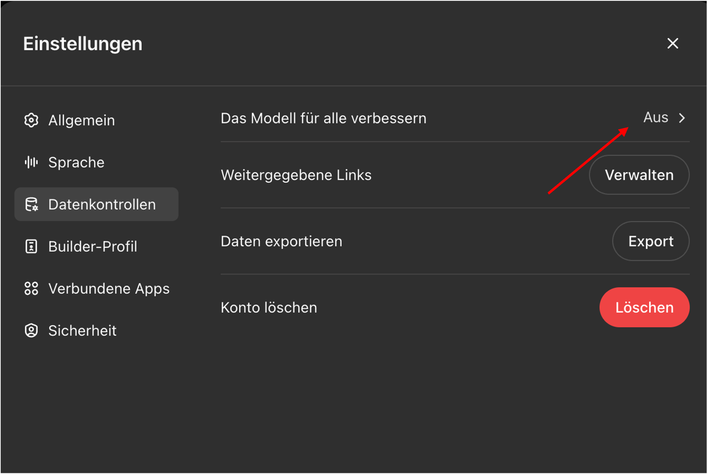
Copilot verwenden
Microsoft Copilot garantiert, dass die Daten der Benutzer gesichert sind:
- Benutzerdaten sind durch Verschlüsselung, Sicherheitskontrollen und Datenisolation (gleich wie bei E-Mails in Exchange und Dateien in SharePoint) geschützt.
- Microsoft verwendet Daten nicht ohne Anweisung des Benutzers.
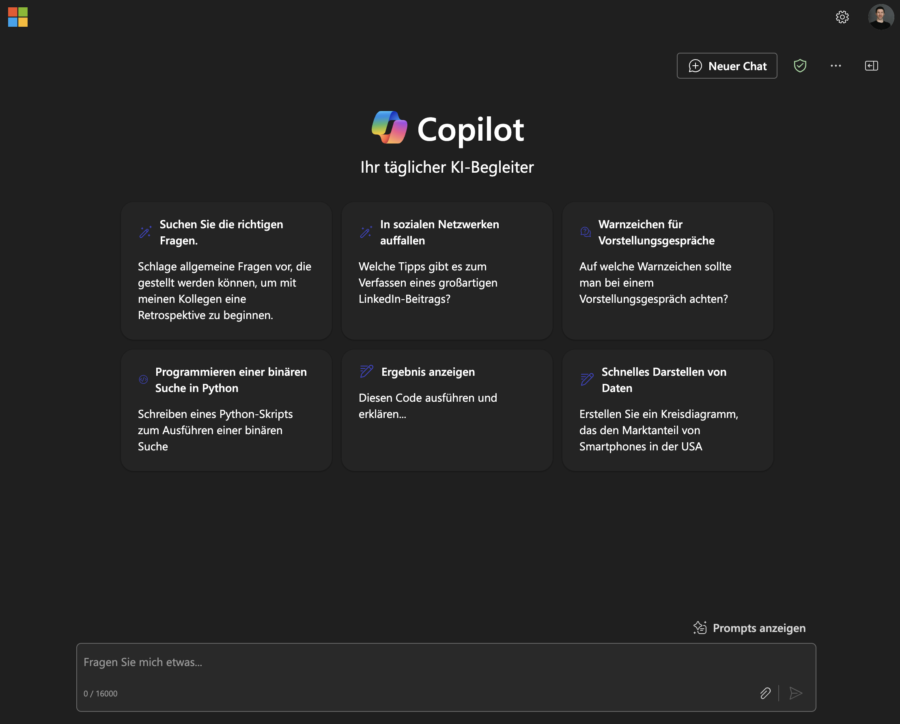
Detektion von KI-generiertem Inhalt
Heuristiken:
Durch Verwendung spezifischer Vokabeln und Phrasen: “delve”, “vibrant”, “embark”, “it’s important to note”, “based on the data provided”.
Durch Verwendung des in der Schweiz unüblichen scharfen S (ß).
Detektion anhand vom Schreibstil und Inhalt:
Erkennungswerkzeuge sind nicht sehr nützlich und können leicht umgangen werden.
Erkennungs-Illusion: Lehrkräfte überschätzen ihre Erkennungsfähigkeiten (Fleckenstein et al. 2024).
Fragen?
References
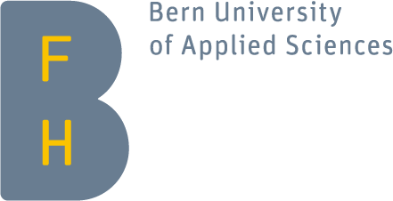
Berner Fachhochschule | Bern University of Applied Sciences